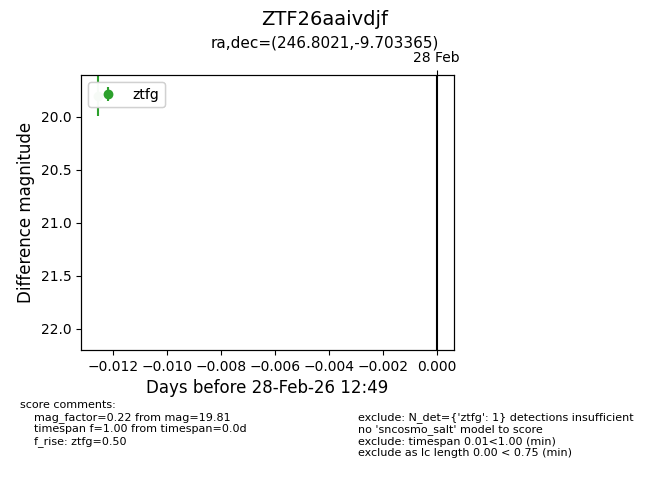
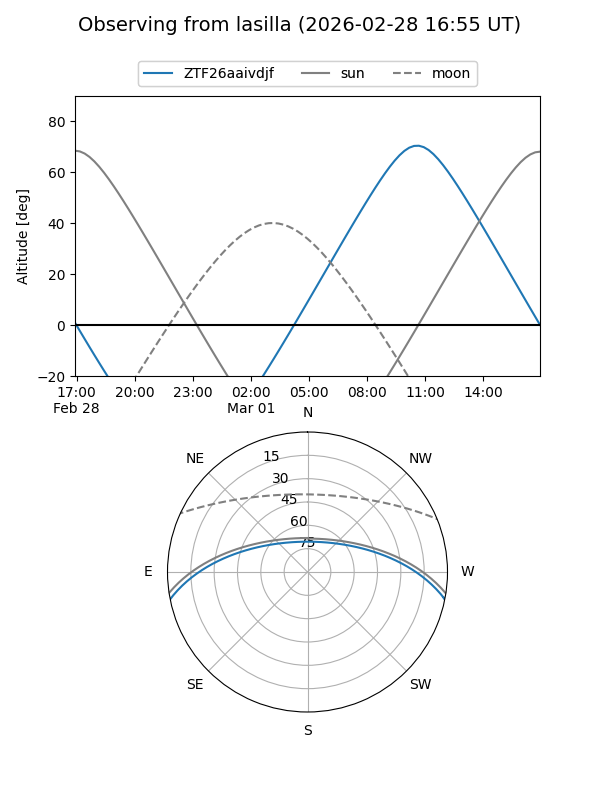
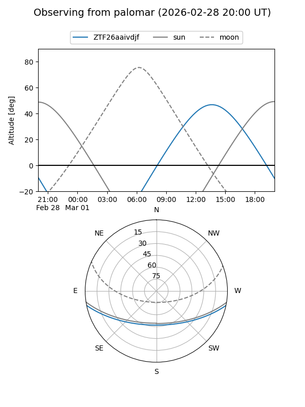

ZTF26aaivdjf
Target ZTF26aaivdjf at 2026-02-28 12:51
Aliases and brokers:
FINK: link
Lasair: link
ALeRCE: link
alt names
ZTF26aaivdjf (ztf,fink_ztf)
Coordinates:
equatorial (ra, dec) = 246.8021,-9.70336
equatorial (HMS+DMS) = 16:27:12.51,-09:42:12.11
galactic (l, b) = (5.4469,+26.07156)
Flags:
Photometry:
last ztfg=19.81
1 ztfg detections
Lightcurve

Visibility


Additional plots